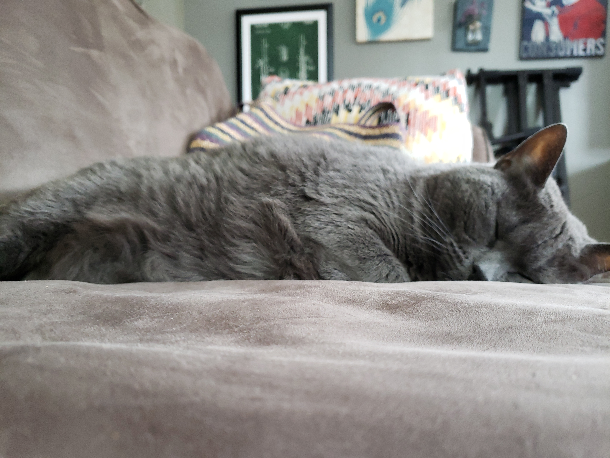
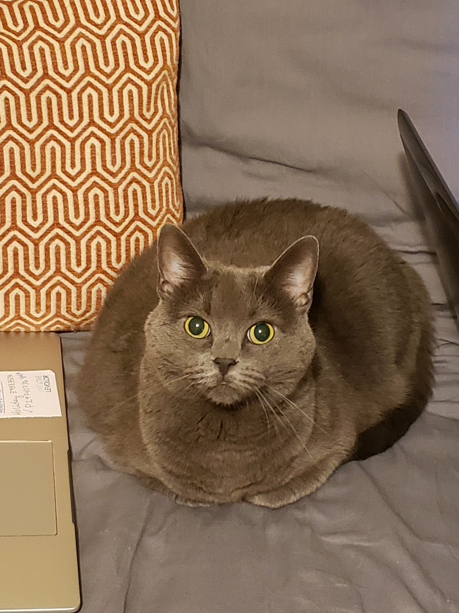

Tuttle

About
Tuttle is a 7-8 year old female tabby cat. She is spayed and declawed.
She's a little chubby but the vet says she's still doing alright! She's
the sweetest cat and she loves to cuddle. She likes people and being pet
by anyone! She loves to be held too, and isn't particular about how you
do it. She's sweet but a little sour--She's talkative and will meow loud and
long until she gets what she wants(or eventually goes back to sleep). She
loves to go out on our screened in patio and will spend all day out there
if I let her. She tries to get outside, but I have to keep her in since
she was declawed. Sometimes I'll let her out to explore for a few minutes
while I closely supervise. She gets excited but never goes more than about
8 feet without sniffing everything.

Adoption
I adopted Tuttle 5 and a half years ago from a cat rescue in Manhattan, KS.
The rescue was set up inside Petco for adoptions but I had seen her online
before I met her. I thought she was cute and a declawed cat was perfect for
living with roommates. I had never had a cat before so I knew I wanted an adult.
When I met her I knew she was the one for me!
Scully

About
Scully is a 4 year old female gray cat. She is spayed but still has her claws.
She is gray all over except for one small spot on her shoulder that you can
only see if you look up close. She likes her alone time but will let you know
when it's time to play! Her favorite "toy" is the light that reflects off of
a screen or something shiny and shines on the wall. She likes the lazer too,
but for some reason random light is really her jam. She's sweet and likes to
cuddle if she's in the right mood(usually before bed). She likes to be pet mostly
just on her head, but when she's really into it she'll snarl in a way so that
one long tooth sticks out!

Adoption
Two years ago my boyfriend and I were thinking about getting another cat. We
thought Tuttle might like a friend, we weren't sure how she would react to
another cat so we decided to wait. One day I was browsing Nextdoor and saw
a tragic post. A woman's mother had died a few months ago and the woman took
in her mother's two cats. The woman had some cats of her own and the landlord
would not let her keep her mother's cats. She had one week or else the
landlord would give her a heavy fine and was threatening eviction. The woman
tried to take the cats to nearby shelters but they didn't have room. The woman
needed to find new homes for the cats or else they would have to be put down.
I couldn't just scroll past that so I reached out.
I didn't feel ready to go from one cat to three, so I said I could only take one.
My boyfriend and I went to meet them and Scully was sweet and cute and close to
Tuttle's age so we picked her. I'm so glad we did! Also, the woman did find
another home for the other cat so it's a happy ending <3